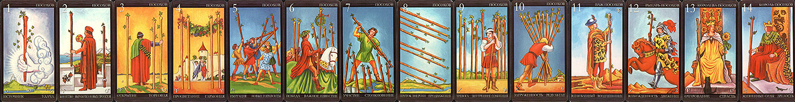

Старшие Арканы отражают общую тенденцию события, ситуации, а также личности.
Задача Младших Арканов в гадании — показать ту конкретную ситуацию или событие, качество, смысл и мораль которых выражают Старшие арканы. Младшие Арканы представляют конкретную характеристику, детали, «расшифровку».
Старшие и Младшие Арканы тесно взаимодействуют между собой и взаимно влияют друг на друга.
Посохи символизируют устойчивый порядок, административную ьласть, закон, а также недвижимость, имущественные отношения.
Посохи помогут нам оценить пользу или вред этих действий для нас, или любого интересующего нас объекта. Посохи также могут указать на результат действий.
В личном раскладе Мечи показывают нам, как человек будет действовать в той или иной ситуации, и характеризуют его темперамент. Посохи дают нам представление о чертах характера человека, связанных с материальной сферой.

Туз Посохов
Туз Посохов символизирует порядок и закон во всем. В личном раскладе свидетельствует о таких положительных качествах, как дисциплинированность, упорство, трудолюбие, способность управлять собой и другими. Для женщины - умение содержать в порядке дом, вести хозяйство. В раскладе для мужчины эта карта говорит
о том, что он хозяин в доме, глава семьи. При гадании на мероприятие Туз Посохов означает, что дело это верное, но на лихую удачу рассчитывать не придется, все необходимо заранее продумать и подготовить. Если карта выпадает девушке, гадающей на возлюбленного, можно не сомневаться в серьезности его намерений. Толкование Туза Посохов зависит от значения сопутствующего Старшего Аркана. Эта карта подкрепляет Старший Аркан, усиливает его влияние на остальные карты расклада.
Двойка Посохов
Двойка Посохов отражает ситуацию выбора жизненной позиции, профессии. В личном раскладе говорит о склонности долго раздумывать перед принятием решения. Если Двойка Посохов выпала в раскладе на мероприятие или любую ситуацию — заранее продумайте тактику, рассчитайте самую удобную для вас позицию. Будьте готовы высказать свое мнение. Часто эта карта предвещает семейные разборки. Двойка Посохов также предупреждает об осторожности в принятии решений.
Тройка Посохов
Тройка Посохов отражает решение проблем, прояснение ситуации. В личном раскладе карта говорит о том, что человек умеет расставить все точки над i, уверен в своих силах. Тройка Посохов часто означает начало трудовой деятельности или какого-либо дела, связанного с хозяйством, например, ремонт, строительство, покупка садового участка, или же становление молодой семьи в имущественном плане. В гадании на мероприятие Тройка Посохов предвещает решение мучающего вас вопроса в вашу пользу и конструктивным путем. Эта карта призывает к конкретности и твердости в любой ситуации.
Четверка Посохов
Четверка Посохов — символ стабильности, достатка и процветания. Если в вашем личном раскладе появилась эта карта — не бойтесь превратностей судьбы, о вас народная пословица говорит: «Счастливому ничего не делается — живет да греется». И даже если случаются неудачи, вы встречаете их без трепета и вовремя ликвидируете. Четверка Посохов сулит успех в любом деле, особенно в торговле недвижимостью. Если девушка гадает на жениха, карта предвещает ей спокойное замужество. Четверка Посохов, как правило, смягчает значение сопутствующего Старшего Аркана.
Пятерка Посохов
Основная идея, которую отражает эта карта, — творчество в материальной сфере жизни, разрушение старого и созидание нового. Пятерка Посохов предвещает перемены, связанные с домашним бытом, имуществом: перестановку мебели, переезд на новую квартиру, судебные дела по поводу имущества. Эта карта также предсказывает семейные неурядицы, а деловому человеку — неудачное вложение денег. В гадании на мероприятие означает, что ваши притязания на что-либо не оправдаются, возможна конфликтная ситуация. В личном раскладе Пятерка Посохов характеризует человека как свободолюбивого, не признающего авторитетов, любящего говорить правду в глаза, но с неустойчивым или даже конфликтным характером.
Шестерка Посохов
Карта символизирует гармонию и успех в материальной сфере. Она предсказывает улучшение отношений в семье, уют в доме, успешную карьеру, покупку красивых вещей и удачу во всех делах, связанных с имуществом. В раскладе на ситуацию Шестерка Посохов говорит о том, что вне зависимости от сложившихся обстоятельств вы останетесь в выигрыше. В личном гадании указывает на практичность, трудолюбие, умение вести хозяйство.
Семерка Посохов
Семерка Посохов символизирует преодоление трудностей, выход на новый уровень жизни в материальной сфере, а также проникновение духовности в мир материи. В личном раскладе Семерка Посохов может указывать на то, что человек зарабатывает деньги творческим трудом, относится к своей работе неформально. Если эта карта выпадает в раскладе со Старшим Арканом Великий Иерофант, она указывает на стремление к религиозной деятельности. При гадании на ситуацию Семерка Посохов предсказывает трудности при достижении намеченной цели, но предупреждает, что отступать нельзя, так как то, чего вы в результате добьетесь, поднимет вас еще на одну ступеньку в личном развитии. Эта карта может означать денежные затруднения при переходе от одного жизненного этапа к другому. Если вы анализируете с помощью Таро свое душевное состояние, Семерка Посохов отражает борьбу вашего разума с неприятными мыслями и эмоциями. Вас мучают сомнения, но не расстраизайтесь, ведь «ничто так не помогает победе истины, как сопротивление ей» (У. Ченнинг).
Восьмерка Посохов
Эта карта отражает порядок, слаженность и безупречность в материальной сфере. В личном раскладе Восьмерка Посохов указывает на такие качества, как пунктуальность, железная логика, трезвый ум, твердость принципов и некоторое высокомерие. Такие люди обычно мастера своего дела и достигают высот в карьере, если, конечно, стремление к совершенству во всем не перерастает > них в манию. Женщину эта карта характеризует сак аккуратную и экономную хозяйку. При гадании на мероприятие карта предсказывает успех, но только в том случае, если вы заранее продумаете все детали и будете полностью компетентны в своем деле. В гадании о вступлении в брак Восьмерка Посохов обещает крепкую семью, союз сердец и кошельков.
Девятка Посохов
Эта карта отражает тягостное воздействие материальной сферы на человеческую душу. В личном раскладе Девятка Посохов означает личное благополучие, спокойствие, достаток, но вместе с тем усталость, смутное недовольство собой и другими и при этом полное нежелание изменить что- либо в своей жизни. При гадании на мероприятие карта предрекает медленное продвижение дела, «долгострой» или говорит о том, что задуманное вами мероприятие вообще не состоится. Девятка Посохов предлагает вам подумать: а не стать ли активнее в достижении своих целей?
Десятка Посохов
Этот аркан символизирует не просто увлеченность, а упертость в свое дело, добывание материальных благ. В личном раскладе карта указывает на то, что человек, не будучи уверен в себе, компенсирует это бесконечным трудом и борьбой за имущество, боясь, что иначе люди не будут его уважать. И чем больше он накапливает, тем больше страшится все это потерять. При гадании на любые мероприятия и жизненные ситуации Десятка Посохов предсказывает получение чего-либо, будь то деньги или материальные ценности. Но в сочетании со Старшими Арканами Повешенный и Башня, наоборот, предрекает потерю. Если вы затрудняетесь в принятии конкретного решения и при гадании выпадает Десятка Посохов, не волнуйтесь: все обстоятельства за вас, и препятствия, выпавшие на вашу долю, временны, но их надо преодолеть, ведь, как известно, стучащему — откроется!
Паж Посохов
Аркан символизирует начало любого дела, связанного с материальными объектами и достижением благосостояния. В личном раскладе карта указывает на беспокойный ищущий характер. Достигнув успеха в одном деле, человек может переключиться на совсем ему незнакомое занятие или начать все заново в другом месте. В гадании на мероприятие Паж указывает на недостаток денежных средств для достижения цели, говорит о том, что все придется начинать «с нуля». Для молодого человека может означать начало самостоятельной жизни. Если девушка гадает на жениха, Паж Посохов характеризует ее избранника как молодого человека с хорошими задатками, но еще не вставшего «на ноги». Не огорчайтесь: ведь чтобы стать женой академика, надо выйти замуж за студента!
Рыцарь Посохов
Эта карта означает посредничество в материальных делах. Рыцарь Посохов обычно появляется «на сцене» не в латах, а в хорошем костюме, и вместо посоха в руках у него «дипломат». Если Рыцарь выпал в вашем личном раскладе — вы любите устраивать чужие, а заодно и свои дела, ездить в командировки и коммерческие поездки. Вы ценный работник и деловой человек. В раскладе на ситуацию эта карта означает, что все пойдет без сучка, без задоринки. В гадании на делового партнера Рыцарь посохов говорит, что вам повезло: партнер выполнит свою часть дела быстро и добросовестно. При гадании на жениха или невесту карта указывает на то, что вашему партнеру еще рано вступать в брак: он слишком увлечен своим делом и не захочет жертвовать ям ради семейного гнезда. Единственный выход — заинтересоваться работой вашего избранника и примкнуть к нему, тогда возможен крепкий брак.
Королева Посохов
Эта карта символизирует порядок, целесообразность, устойчивость. Для женщины означает ее самовыражение в роли хозяйки дома, матери. В личном раскладе Королева Посохов указывает на умение логически рассуждать, осторожность, практическую сметку. Такие люди умеют уступать в споре, но всегда остаются при своем мнении. Намеченной цели добиваются не торопясь, но упорно, неудачи не пугают их. При гадании на мероприятие Королева Посохов часто означает участие или помощь чьей-нибудь мамы или сестры. Карта предсказывает, что успех в любой ситуации достанется самому добросовестному и терпеливом). Толкование этой карты почти не зависит от стоящего рядом Старшего Аркана. Королева Посохов - стабильная и самодостаточная «личность» и изменить ее значение трудно. Старшие Арканы лишь придают ей некоторые оттенки:
Королева Посохов и Солнце — хорошая мать;
Королева Посохов и Возлюбленный — нерешительность, стремление все взвесить;
Королева Посохов с Дьяволом — стремление добиваться своих целей с помощью лжи;
Королева Посохов с Повешенным означает, что человек жертвует своими интересами и здоровьем ради семьи.
Король Посохов
Король Посохов — символ сильной воли, разума и справедливости. В личном раскладе эта карта означает упорство, трудолюбие, силу характера, целеустремленность. Но такому человеку свойственна также некоторая твердолобость и черствость. В крайнем варианте Король Посохов вообще, кроме своего мнения, ничего не учитывает, подобная властность становится тяжелой ношей для его семьи. В карьере Король Посохов всегда достигает успеха; он из тех, кто «проработал на этом заводе сначала чернорабочим, потом слесарем, потом инженером двадцать лет, а теперь занимает должность директора того же завода». При раскладе на мероприятие эта карта означает, что придется потрудиться ради достижения желаемого, но вам может оказать поддержку начальник на работе, ваш отец или просто пожилой, опытный человек. Король Посохов обычно сильно меняет свой «характер» и «настроение» рядом с разными Старшими Арканами. Но из «добренького дедушки» (Король Посохов и Солнце) или мудрого учителя (Король Посохов и Великий Иерофант) он может превратиться в автократа и властолюбца (Король Посохов и Император) или «злого гения» (Король Посохов и Дьявол).